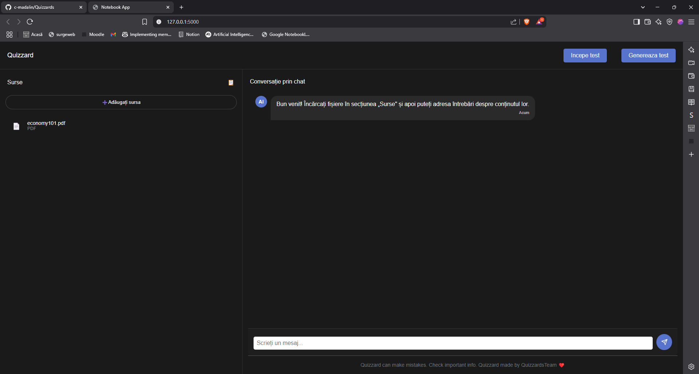

My Projects



Student & Teacher | Applied Informatics
I study Applied Informatics at the Faculty of Mathematics and Computer Science in Brasov, and I'm always looking to grow and learn more about myself and the world around me. I love exploring new ideas and perspectives. I have a logical mindset and often find myself asking, "Why?"—a question that keeps me curious and pushes me to understand how things work on a deeper level.
Studying essential concepts like data structures, algorithms, and mathematical fundamentals at the Faculty of Mathematics and Computer Science in Brasov.
Learning Android application development using Android Studio, Java, and Kotlin, gaining a solid understanding of the mobile app development process.
Hands-on course focused on software engineering, covering requirements engineering, software design, agile methodologies, and cybersecurity.
Teaching Scratch to children as part of the CoderDojo initiative, helping young learners develop coding skills through interactive lessons.
Led a Global Volunteering project in a local school, serving as the primary point of contact between AIESEC and its partners, managing relationships and project objectives.
Established partnerships with potential collaborators to launch a Global Volunteering project that brought international volunteers to teach courses based on the UN's sustainability goals.
cazanmadalin12@gmail.com
0726 998 966
Brasov, Romania